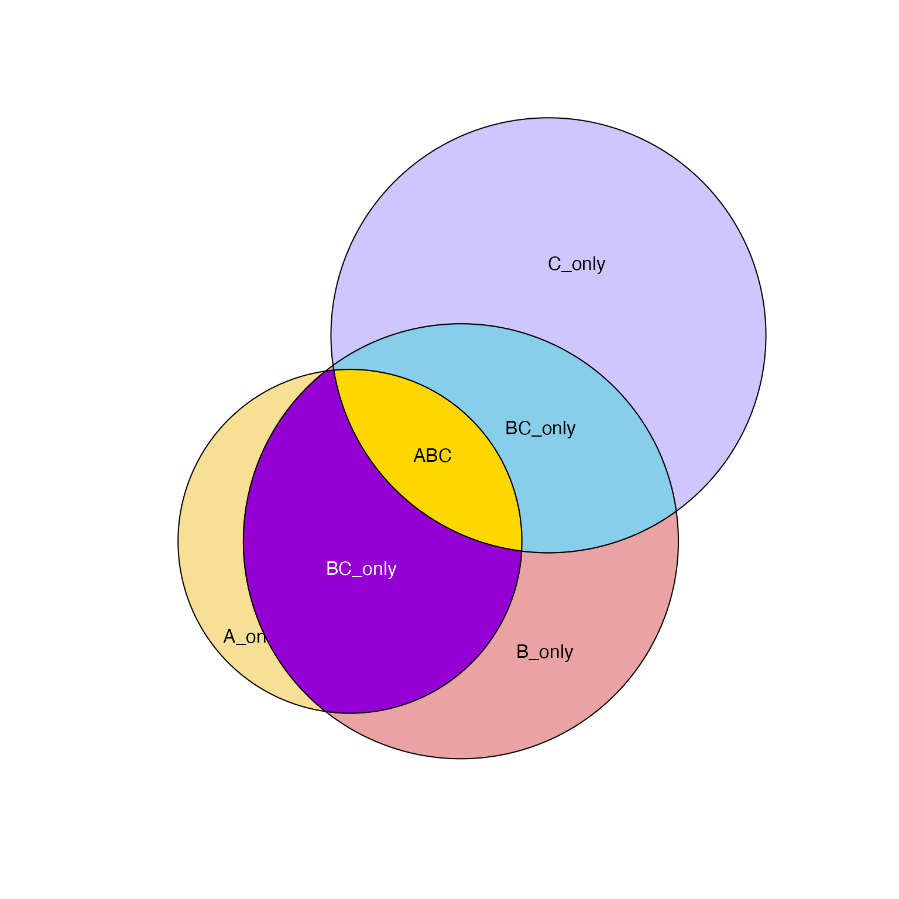
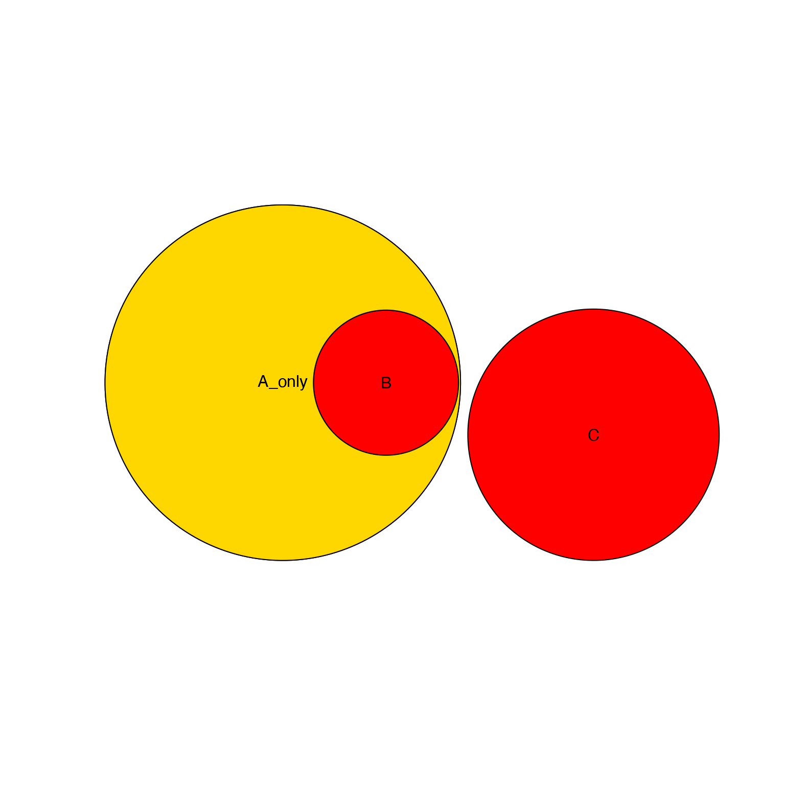
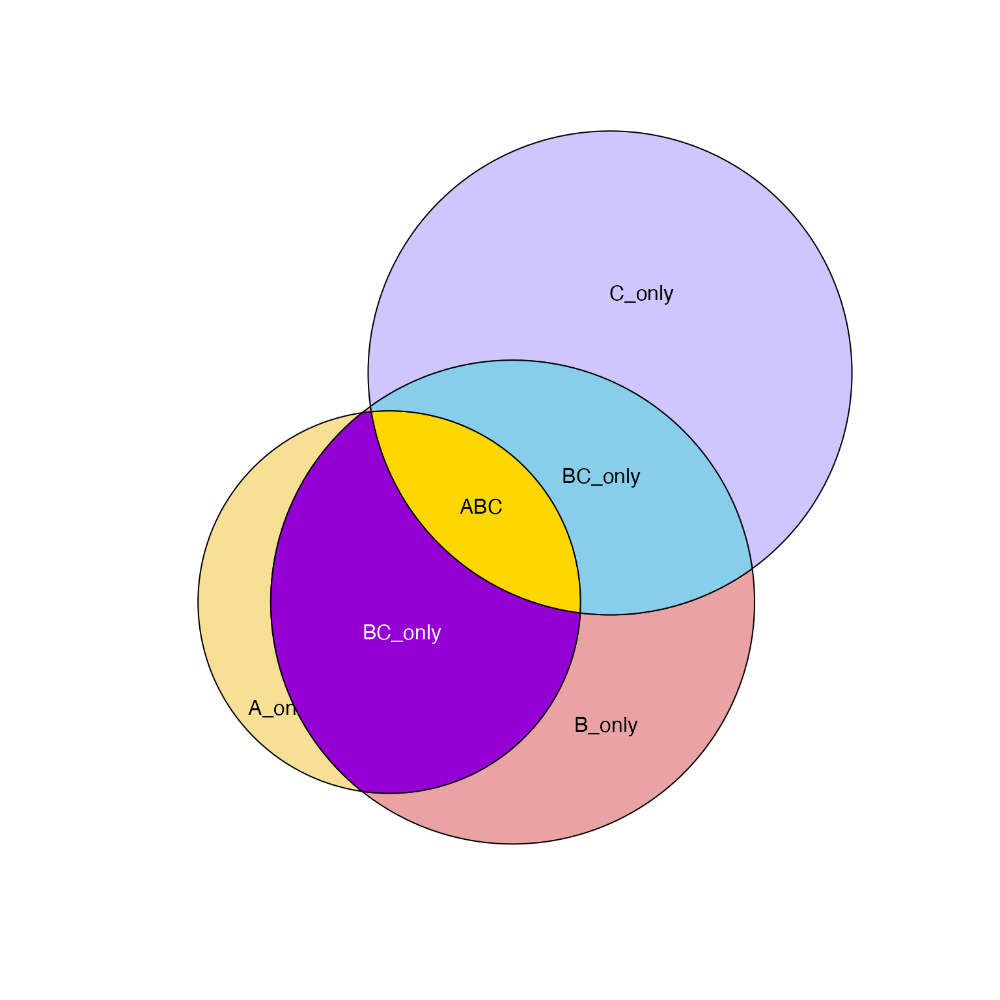
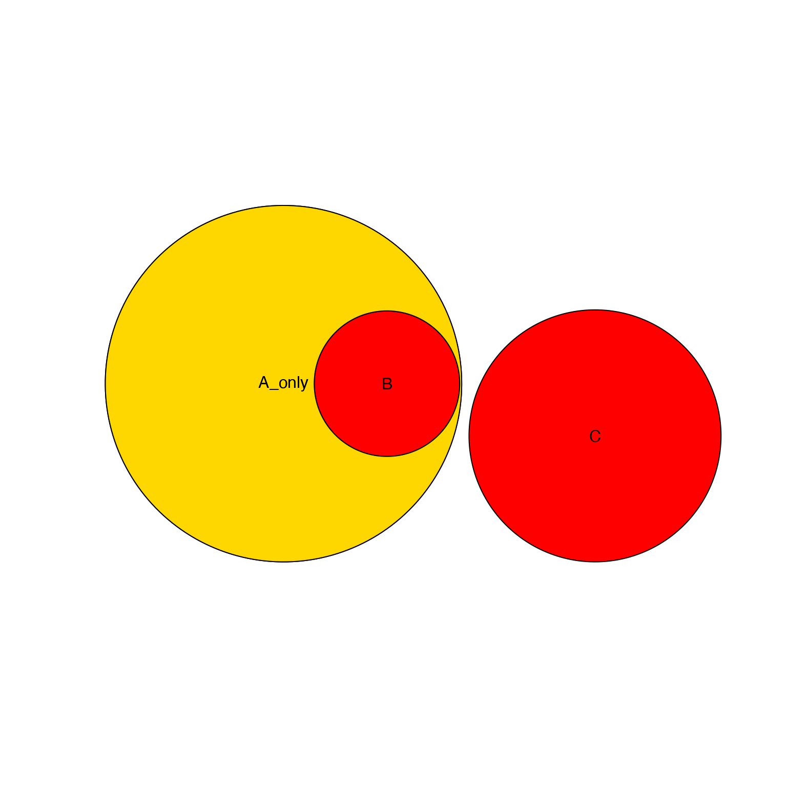

Simple wrapper to polylabelr::poi() for polygon_list
Source:R/venndir-polyclip.R
polygon_list_labelr.RdSimple wrapper to polylabelr::poi() for polygon_list
polygon_list_labelr(polygon_list, precision = 1, add_labels = FALSE, ...)Arguments
- polygon_list
listobject
Value
matrix with nrow length(polygon_list) with x,y coordinates
representing the visual center of each polygon in the list.
See also
Other venndir polygons:
bbox_polygon_list(),
eulerr_to_polygon_list(),
get_largest_polygon_list(),
get_venn_polygon_shapes(),
intersect_polygon_list(),
labelr_polygon_list(),
minus_polygon_list(),
nudge_polygon_coords(),
nudge_polygon_list(),
plot_polygon_list(),
polygon_areas(),
polygon_circles(),
polygon_ellipses(),
polygon_list_to_xy_list(),
rescale_polygon_list(),
simple_ellipse(),
union_polygon_list(),
xy_list_to_polygon_list()
Examples
counts <- c(A=1, B=2, `A&B`=3, C=5, `B&C`=2, `A&C`=2, `A&B&C`=1)
x <- eulerr::euler(counts)
polygon_list <- eulerr_to_polygon_list(x)
# default is to label each polygon in its center
plot_polygon_list(polygon_list,
col=colorjam::rainbowJam(length(polygon_list), alpha=0.5))
polygon_list_labelr(polygon_list, add_labels=TRUE)
 #> x y
#> A -0.8855151 -0.755755
#> B -0.0717662 -0.755755
#> C 0.5705256 0.7557548
# create unique polygons for each label
A_only <- minus_polygon_list(polygon_list, new_name="A_only");
B_only <- minus_polygon_list(polygon_list[c(2,1,3)], new_name="B_only");
C_only <- minus_polygon_list(polygon_list[c(3,1,2)], new_name="C_only");
plot_polygon_list(polygon_list,
col=colorjam::rainbowJam(length(polygon_list), alpha=0.5))
ABC_only <- c(A_only, B_only, C_only);
polygon_list_labelr(ABC_only, add_labels=TRUE)
#> x y
#> A_only -1.606125 -1.463378
#> B_only 0.5444141 -1.576096
#> C_only 0.7788917 1.268915
# label ABC intersection
ABC_int <- intersect_polygon_list(polygon_list[c(1,2,3)], new_name="ABC");
plot_polygon_list(ABC_int, add=TRUE, col="gold")
polygon_list_labelr(ABC_int, add_labels=TRUE)
#> x y
#> ABC -0.2799909 -0.1271644
# label AB intersection
AB_only <- minus_polygon_list(
c(intersect_polygon_list(polygon_list[c(1,2)], new_name="BC_only"),
polygon_list[3]))
plot_polygon_list(AB_only, add=TRUE, col="darkviolet")
polygon_list_labelr(AB_only, add_labels=TRUE, col="white")
#> x y
#> BC_only -0.8030932 -0.9652015
# label BC intersection
BC_only <- minus_polygon_list(
c(intersect_polygon_list(polygon_list[c(2,3)], new_name="BC_only"),
polygon_list[1]))
plot_polygon_list(BC_only, add=TRUE, col="skyblue")
polygon_list_labelr(BC_only, add_labels=TRUE)

#> x y
#> BC_only 0.5139793 0.06356166
# test with fully overlapping polygon (to create a hole)
counts <- c(A=5, B=0, C=3, `A&B`=1)
x <- eulerr::euler(counts)
polygon_list <- eulerr_to_polygon_list(x)
plot_polygon_list(polygon_list[1:3], col=c("red"))
A_only <- minus_polygon_list(polygon_list[c(1, 2, 3)], new_name="A_only");
plot_polygon_list(A_only, col="gold", add=TRUE)
polygon_list_labelr(A_only, add_labels=TRUE)
#> x y
#> A_only -1.338811 4.798774e-11
polygon_list_labelr(c(A_only, polygon_list[2:3]), add_labels=TRUE)

#> x y
#> A_only -1.338811 4.798774e-11
#> B -1.132729 -7.283435e-17
#> C 1.076991 -0.4047716
#> x y
#> A -0.8855151 -0.755755
#> B -0.0717662 -0.755755
#> C 0.5705256 0.7557548
# create unique polygons for each label
A_only <- minus_polygon_list(polygon_list, new_name="A_only");
B_only <- minus_polygon_list(polygon_list[c(2,1,3)], new_name="B_only");
C_only <- minus_polygon_list(polygon_list[c(3,1,2)], new_name="C_only");
plot_polygon_list(polygon_list,
col=colorjam::rainbowJam(length(polygon_list), alpha=0.5))
ABC_only <- c(A_only, B_only, C_only);
polygon_list_labelr(ABC_only, add_labels=TRUE)
#> x y
#> A_only -1.606125 -1.463378
#> B_only 0.5444141 -1.576096
#> C_only 0.7788917 1.268915
# label ABC intersection
ABC_int <- intersect_polygon_list(polygon_list[c(1,2,3)], new_name="ABC");
plot_polygon_list(ABC_int, add=TRUE, col="gold")
polygon_list_labelr(ABC_int, add_labels=TRUE)
#> x y
#> ABC -0.2799909 -0.1271644
# label AB intersection
AB_only <- minus_polygon_list(
c(intersect_polygon_list(polygon_list[c(1,2)], new_name="BC_only"),
polygon_list[3]))
plot_polygon_list(AB_only, add=TRUE, col="darkviolet")
polygon_list_labelr(AB_only, add_labels=TRUE, col="white")
#> x y
#> BC_only -0.8030932 -0.9652015
# label BC intersection
BC_only <- minus_polygon_list(
c(intersect_polygon_list(polygon_list[c(2,3)], new_name="BC_only"),
polygon_list[1]))
plot_polygon_list(BC_only, add=TRUE, col="skyblue")
polygon_list_labelr(BC_only, add_labels=TRUE)

#> x y
#> BC_only 0.5139793 0.06356166
# test with fully overlapping polygon (to create a hole)
counts <- c(A=5, B=0, C=3, `A&B`=1)
x <- eulerr::euler(counts)
polygon_list <- eulerr_to_polygon_list(x)
plot_polygon_list(polygon_list[1:3], col=c("red"))
A_only <- minus_polygon_list(polygon_list[c(1, 2, 3)], new_name="A_only");
plot_polygon_list(A_only, col="gold", add=TRUE)
polygon_list_labelr(A_only, add_labels=TRUE)
#> x y
#> A_only -1.338811 4.798774e-11
polygon_list_labelr(c(A_only, polygon_list[2:3]), add_labels=TRUE)

#> x y
#> A_only -1.338811 4.798774e-11
#> B -1.132729 -7.283435e-17
#> C 1.076991 -0.4047716